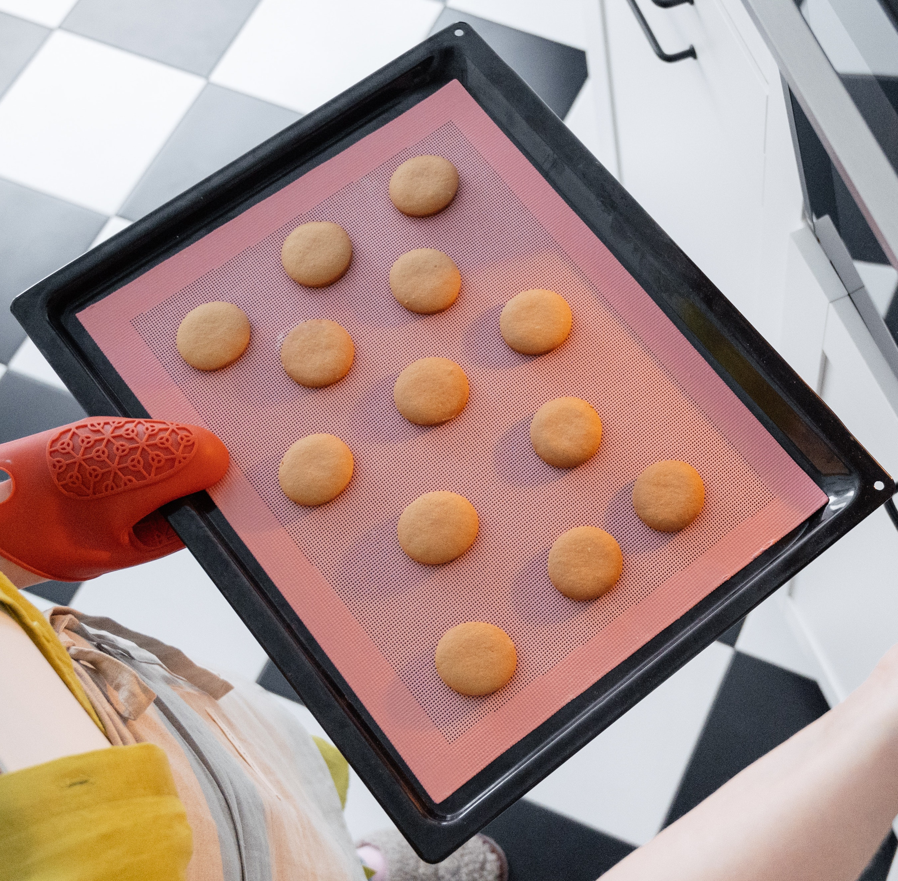

Find our Recipe
At Munch With Tea, we believe that the pleasure of tea extends beyond the cup. That's why we've gathered an array of delectable Tea Snacks recipes that are specially designed to enhance your tea-drinking experience. Whether you're a seasoned tea enthusiast or just exploring the world of tea, our Tea Snacks collection offers a variety of treats that perfectly pair with your favorite blends.
There's a magical synergy that happens when the zesty brightness of lemon cream biscuits meets the soothing comfort of a warm cup of tea. These two culinary delights complement each other in a way that awakens your senses and elevates your taste experience.
Whether you're enjoying a quiet afternoon by yourself or sharing laughter with friends, the pairing of lemon cream biscuits and tea creates an experience that's truly special. So, as you settle into your favorite spot with a cup of tea in hand, let the bright and cheerful flavors of lemon cream biscuits accompany you on a journey of taste and relaxation."
